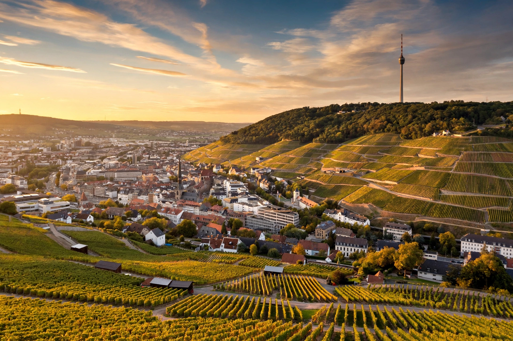

Baden-Württemberg

| Baden-Württemberg | |
|---|---|
| Country | Germany |
| Capital | Stuttgart |
| Government (Minister-President) | Winfried Kretschmann (Greens) |
| Area | 35,752 km² (3rd in Germany) |
| Population | approx. 11.1 million (3rd in Germany) |
| Time zone | CET (UTC+1) |
| Dialects | Swabian, Alemannic, South Franconian |
Baden-Württemberg is a German state (Land) in the southwest of the country, east of the Rhine, which forms its western border with France. Its capital and largest city is Stuttgart. With about 11.1 million inhabitants and an area of 35,752 square kilometres, it is the third-largest German state by both measures. It is one of Germany's most prosperous regions, known for its automotive and engineering industries and its high rate of innovation.
History
The state was created on 25 April 1952 by the merger of the post-war states of Württemberg-Baden (in the American occupation zone), South Baden and Württemberg-Hohenzollern (in the French zone), following a referendum in December 1951. Historically the region had consisted of the Grand Duchy (later Republic) of Baden in the west and the Kingdom (later Free People's State) of Württemberg in the east, along with the Prussian exclave of Hohenzollern.
Since 2011 the state has been led by Winfried Kretschmann of the Green Party, the first Green minister-president of a German state, governing in coalition with the CDU since 2016.
Geography
The Black Forest (Schwarzwald) occupies the west, rising to the Feldberg (1,493 m), the highest peak in Germany outside the Alps. The Swabian Alb (Schwäbische Alb), a limestone plateau with cave systems and early Ice Age art, runs across the middle. In the south the state borders Lake Constance (Bodensee), shared with Austria and Switzerland. The Neckar, a Rhine tributary, flows through Stuttgart, Tübingen and Heidelberg; the Danube rises in the Black Forest near Donaueschingen and Furtwangen and flows east through Ulm.
Major cities
Besides Stuttgart, the largest cities are Mannheim, Karlsruhe (seat of the Federal Constitutional Court), Freiburg im Breisgau, Heidelberg (with Germany's oldest university, founded 1386), Ulm (birthplace of Albert Einstein and home to the world's tallest church steeple), Heilbronn and Pforzheim.
Economy
Baden-Württemberg has one of the lowest unemployment rates in Germany and leads the country in research spending and patent applications per capita. It is the home of Mercedes-Benz (Daimler) and Porsche in Stuttgart, Audi's plant at Neckarsulm, Robert Bosch, the software giant SAP at Walldorf, and a dense network of highly specialised small and medium-sized "hidden champion" firms (Mittelstand), especially in machine tools, automotive supply and medical technology. The state markets itself with the slogan "Wir können alles. Außer Hochdeutsch" ("We can do everything — except speak standard German"), a playful reference to its strong regional dialects.
Culture
The population speaks Swabian (in Württemberg) and Alemannic and Franconian dialects (in Baden). Traditional dishes include Maultaschen, Spätzle and Linsen mit Spätzle. The region is a major wine producer (Württemberg and Baden wine regions). Baden-Württemberg contains several UNESCO World Heritage Sites, including Maulbronn Monastery, the island of Reichenau, the prehistoric pile dwellings around the Alps, the Swabian caves and art of the Ice Age, and buildings by Le Corbusier in Stuttgart.